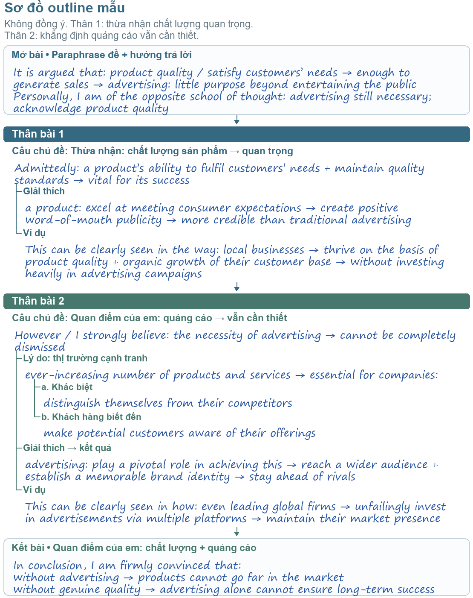
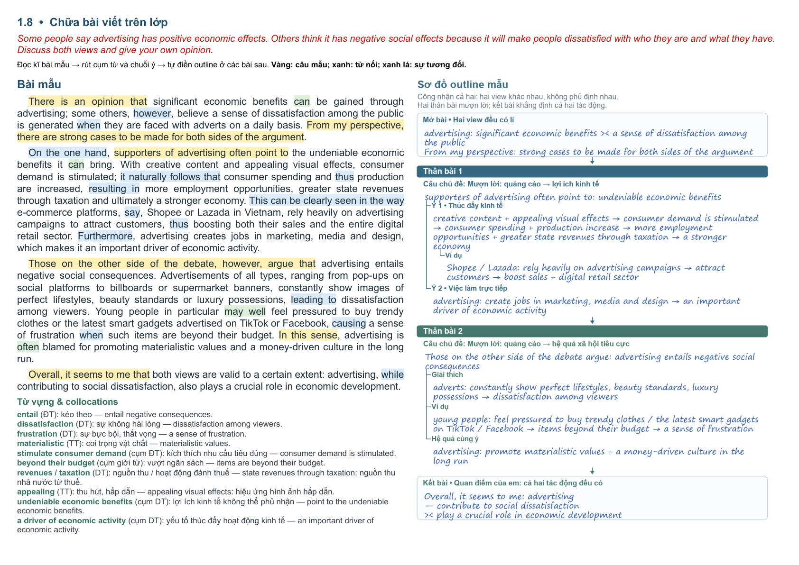
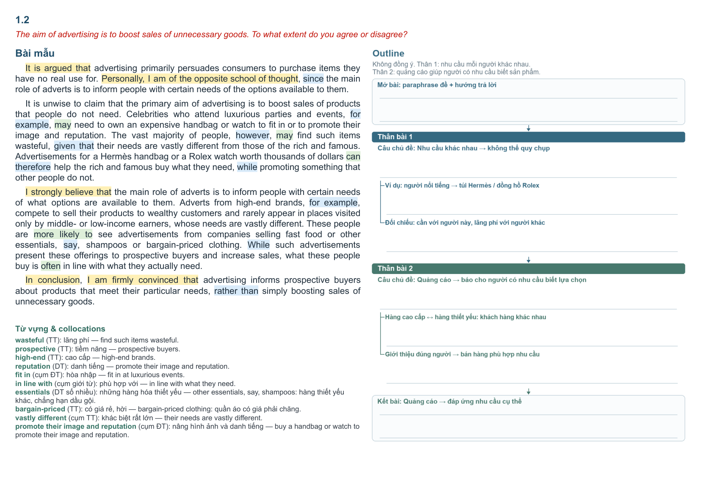
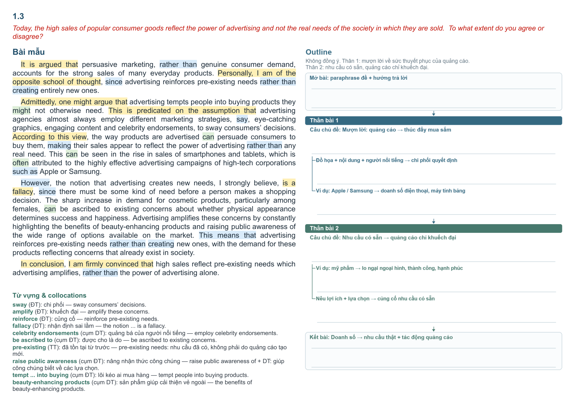
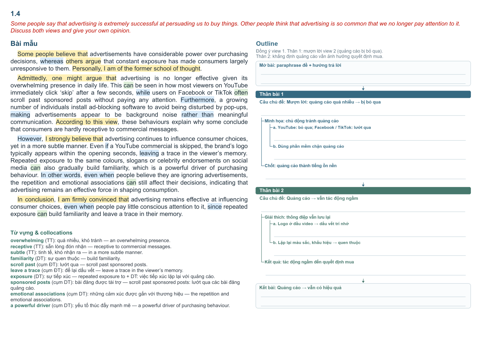
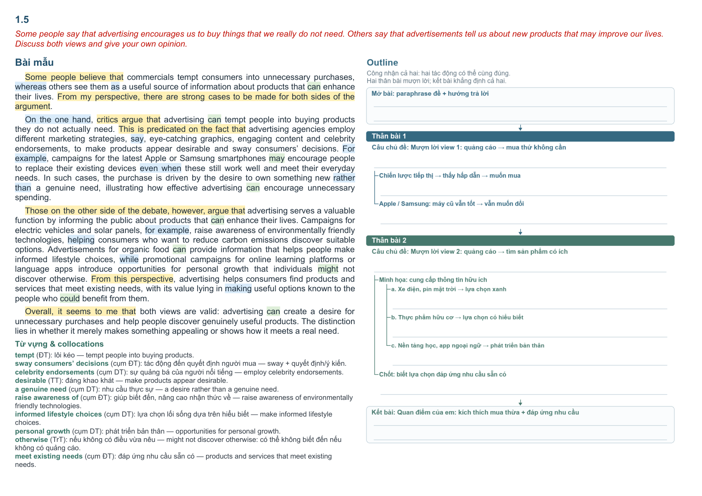
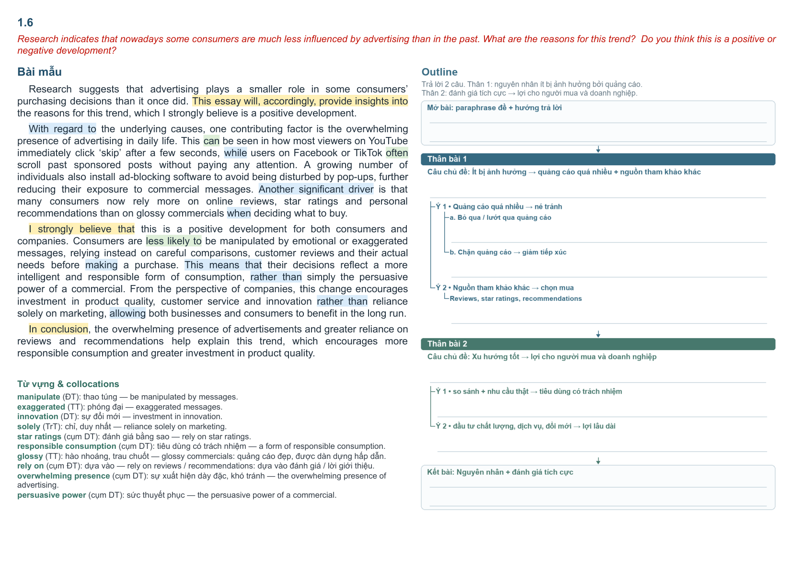
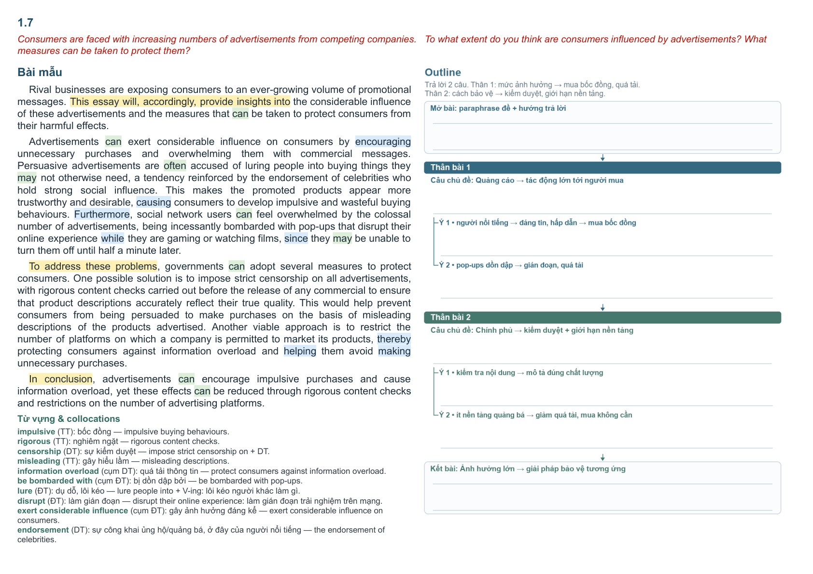
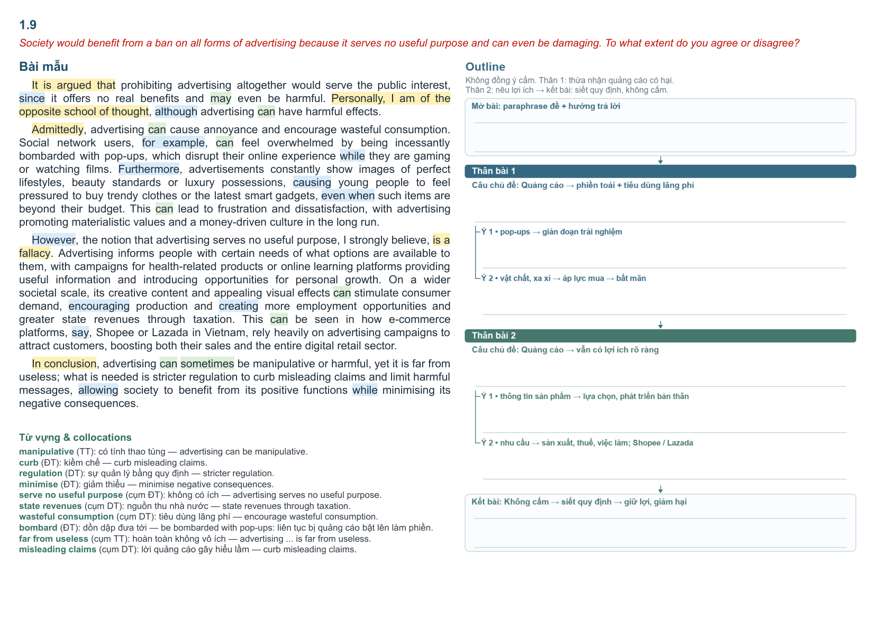
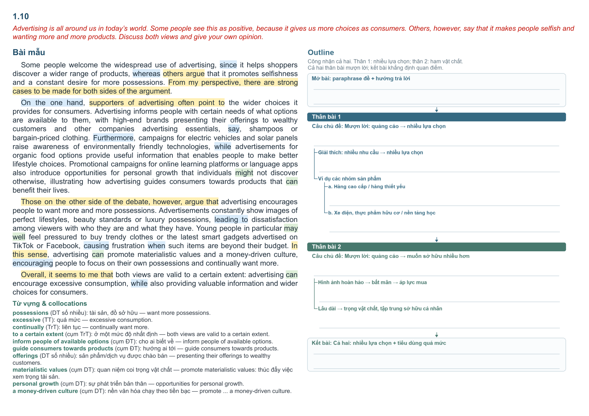

BUỔI HỌC VIẾT SỐ 27
IELTS WRITING TASK 2 — BUỔI 27
Bài tập về nhà · Buổi 27
01 bài viết từ sơ đồ dàn ý chi tiết + dàn ý của các bài tham khảo còn lại.
Nộp trong cùng Form: vở chép bài + ảnh dàn ý đã làm + 01 bài viết đánh máy.
Cách làm
- Chép bài: chép tay đầy đủ phần bài giảng cô giao, chụp rõ từng trang.
- Rút dàn ý: dùng bài 1.8 đã chữa trên lớp làm mẫu. Đọc các bài tham khảo 1.2–1.10, điền tay vào sơ đồ bằng cụm từ tiếng Anh + mũi tên. Có thể in phiếu hoặc tự vẽ sơ đồ vào vở.
- Viết bài 1.1: đọc đề và ảnh sơ đồ chi tiết dưới đây; ghép các nhánh thành 01 bài hoàn chỉnh, ít nhất 250 từ. Giữ ý, ví dụ và wording quan trọng; tự paraphrase đề và nối câu theo cách cô dạy.
- Nộp bài: ảnh vở chép vào ô vở; ảnh các dàn ý đã điền vào ô dàn ý; dán bài 1.1 vào ô bài viết đánh máy.
Với outline: ghi rõ ai/cái gì: làm gì → vì sao → kết quả. Nhánh lớn là ý chính; nhánh nhỏ giải thích hoặc minh họa cho đúng ý. Giữ đủ chuỗi lập luận, không chép nguyên bài và không rút còn vài từ rời rạc.
Với bài viết: mỗi đoạn thân bài 3–4 câu, tối đa 5. Vận dụng lý thuyết buổi 21–26; không dùng dạng viết tắt, so, because, but, I agree/I disagree hoặc like để liệt kê.
Viết bài hoàn chỉnh · Topic 1.1
If a product is good or meets people’s needs, they will buy it. Therefore, advertising is unnecessary and no more than entertainment. To what extent do you agree or disagree?
Không đồng ý. Thân 1: thừa nhận chất lượng quan trọng. Thân 2: khẳng định quảng cáo vẫn cần thiết.
Dùng sơ đồ đã điền để viết bài. Mỗi nhánh là cụm từ để phát triển thành câu; đọc cả nhánh nhỏ và ví dụ trước khi viết.


Đọc bài tham khảo → điền sơ đồ outline
Các đề 1.2–1.10 chỉ làm dàn ý từ bài tham khảo. Bài 1.8 là mẫu đã chữa trên lớp. Bấm từng đề để mở ảnh; tải riêng phiếu trống nếu muốn in và điền tay.
1.8 · Chữa bài viết trên lớp — sơ đồ mẫu
Some people say advertising has positive economic effects. Others think it has negative social effects because it will make people dissatisfied with who they are and what they have. Discuss both views and give your own opinion.
Quan sát cách rút chủ thể, cụm từ và chuỗi lập luận trong sơ đồ đã điền để làm các đề khác.



1.2 · Bài tham khảo + phiếu outline
The aim of advertising is to boost sales of unnecessary goods. To what extent do you agree or disagree?
Đọc bài tham khảo bên trái; rút cụm từ và chuỗi ý vào phiếu bên phải. Không chép nguyên câu.



1.3 · Bài tham khảo + phiếu outline
Today, the high sales of popular consumer goods reflect the power of advertising and not the real needs of the society in which they are sold. To what extent do you agree or disagree?
Đọc bài tham khảo bên trái; rút cụm từ và chuỗi ý vào phiếu bên phải. Không chép nguyên câu.



1.4 · Bài tham khảo + phiếu outline
Some people say that advertising is extremely successful at persuading us to buy things. Other people think that advertising is so common that we no longer pay attention to it. Discuss both views and give your own opinion.
Đọc bài tham khảo bên trái; rút cụm từ và chuỗi ý vào phiếu bên phải. Không chép nguyên câu.



1.5 · Bài tham khảo + phiếu outline
Some people say that advertising encourages us to buy things that we really do not need. Others say that advertisements tell us about new products that may improve our lives. Discuss both views and give your own opinion.
Đọc bài tham khảo bên trái; rút cụm từ và chuỗi ý vào phiếu bên phải. Không chép nguyên câu.



1.6 · Bài tham khảo + phiếu outline
Research indicates that nowadays some consumers are much less influenced by advertising than in the past. What are the reasons for this trend? Do you think this is a positive or negative development?
Đọc bài tham khảo bên trái; rút cụm từ và chuỗi ý vào phiếu bên phải. Không chép nguyên câu.



1.7 · Bài tham khảo + phiếu outline
Consumers are faced with increasing numbers of advertisements from competing companies. To what extent do you think are consumers influenced by advertisements? What measures can be taken to protect them?
Đọc bài tham khảo bên trái; rút cụm từ và chuỗi ý vào phiếu bên phải. Không chép nguyên câu.



1.9 · Bài tham khảo + phiếu outline
Society would benefit from a ban on all forms of advertising because it serves no useful purpose and can even be damaging. To what extent do you agree or disagree?
Đọc bài tham khảo bên trái; rút cụm từ và chuỗi ý vào phiếu bên phải. Không chép nguyên câu.



1.10 · Bài tham khảo + phiếu outline
Advertising is all around us in today’s world. Some people see this as positive, because it gives us more choices as consumers. Others, however, say that it makes people selfish and wanting more and more products. Discuss both views and give your own opinion.
Đọc bài tham khảo bên trái; rút cụm từ và chuỗi ý vào phiếu bên phải. Không chép nguyên câu.



Vở chép bài
Chép tay đầy đủ nội dung bài giảng cô giao theo đúng thứ tự. Chụp rõ, đủ sáng, đúng chiều; nộp ảnh rời hoặc một PDF vào File scan vở chép. Nếu hơn 10 ảnh, dùng ô Ảnh bổ sung.
Không cần chép nguyên các bài tham khảo để thay cho việc rút dàn ý. Ảnh các dàn ý nộp riêng vào đúng ô; được dùng phiếu in có phần điền tay.
Nộp bài
Kiểm tra họ tên, lớp và đủ vở chép bài + ảnh dàn ý 1.2–1.10 + bài 1.1 đánh máy. Nộp ảnh bài đã làm, không nộp phiếu trống. Không cần viết thêm bài hoàn chỉnh cho 1.3 hoặc 1.6.
NỘP BÀI BUỔI 27